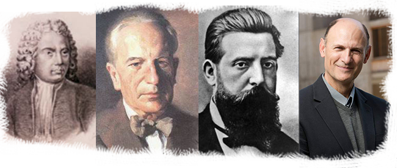
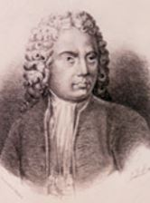
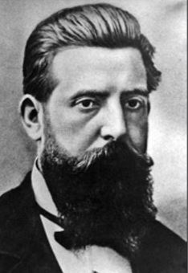
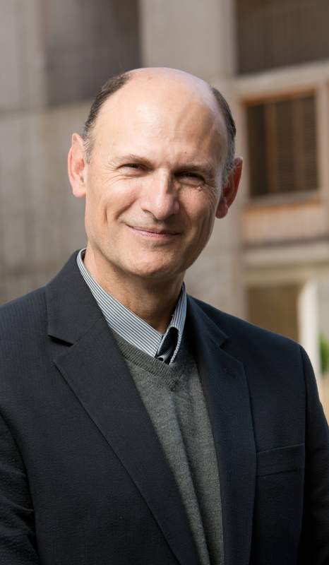

Durante toda su historia, Hellín ha tenido importantes e ilustres personajes, desde importantes políticos
a actuales científicos de talla mundial, pasando por reconocidos poetas y artistas.
A contionuación, os haremos una breve selección completamente subjetiva de tan solo 4 personajes de gran importancia, a la vez que os invitamos a investigar en la rica historia de Hellín para descubrir a tantos otros.
Como recomendación dejamos uno de los documentos que nosotros mismos hemos consultado: Hellineros ilustres de Antonio Moreno García.
Melchor Rafael de Macanaz y Montesinos
|

|
"Una de las figuras más insignes entre los hijos ilustres de nuestra provincia."
Este personaje hellinero llegó a ser un importante político a nivel nacional como Fiscal General de la Monarquía.Paisano de familia noble al que sus ferreas
creencias políticas le llevaron del mayor reconocimiento posible a regresar de su exilio a España, ser encerrado y salir con 90 años para morir en su tierra natal.
|
(1670-1760)
Justo Millán Espinosa
|

|
"Millán es el arquitecto más completo de España; une a un acabado y gracioso dibujo una distribución sabia."
Afamado y reconocido arquitecto con trabajos que se levantaron desde nuestras tierras (puerta, torre y reparaciones de la Ermita del Rosario) hasta la
capital francesa, donde se erigió la primera plaza de toros parisina, pasando por una cantidad abrumadora de obras que se extienden desde la provincia de Albacete hasta toda Murcia.
|
(1843-1928)
Mariano Tomás López

|
"El más importante premio del periodismo hispano...su nombre empezó a figurar para el gran público en el primer plano de la actualidad literaria."
Figura literaria nacional, Mariano Tomás fue un escritor polifacético que fue capaz de dominar la lírica, la narrativa, el teatro, las biografías e inlcuso los articulos periodísticos.
Además de ser autor de más de 20 obras, fue responsable de la valija diplomática y redactor jefe del índice Cultural Español del Ministerio de Asuntos Exteriores, oficio que le llevó a viajar por Europa y Asia.
|
(1890-1957)
Juan Carlos Izpisua Belmonte
|

|
"Puede no ser un personaje conocido para todos pero es, sin duda, uno de los nombres que está destinado a entrar en la historia por sus grandes logros y descubrimientos científicos."SaludADiario.es
El Dr.Izpisua, hellinero que no tuvo un camino nada fácil, ha conseguido convertirse en un laureado y reconocido bioquímico de talla mundial. Más de 400 publicaciones y una gran cantidad de honores y premios avalan a esta eminencia.
Desde mi humilde posición como estudiante en el Insituto de Enseñanza Secundaria Izpisua Belmonte,
No puedo mas que sentir una increible admiración por la capacidad de trabajo y esfuerzo del científico.
|